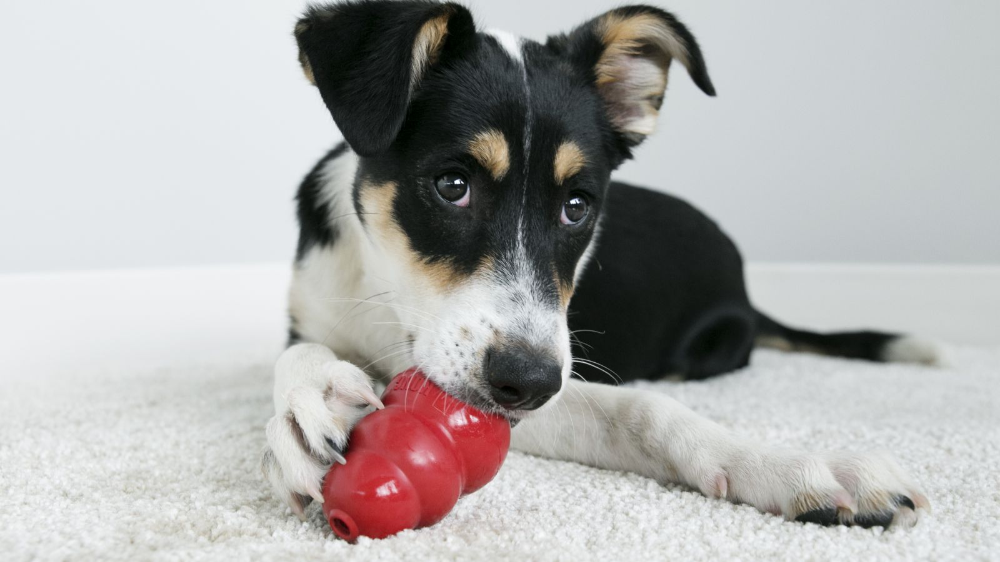
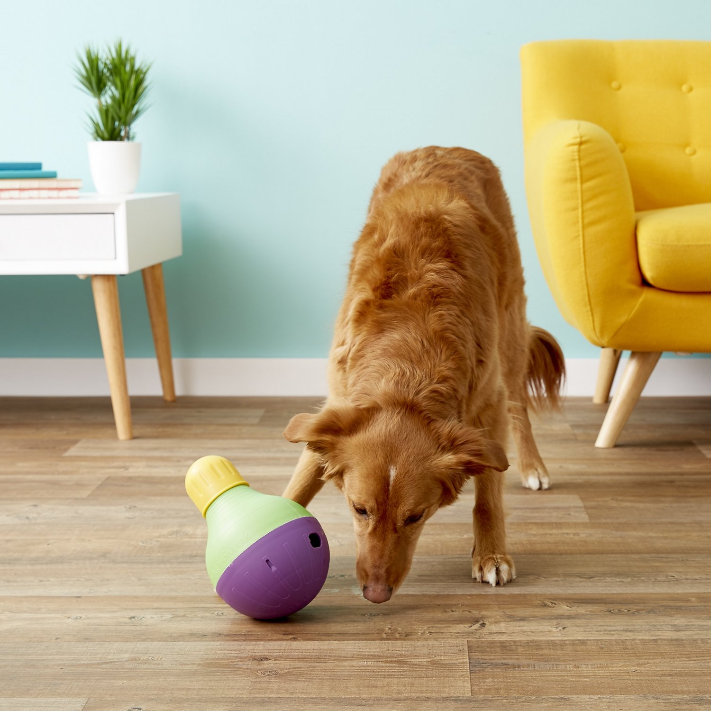

My Pet Dog
About my dog
Treats
Here is a list of things Dog likes:
- Broccoli
- Chicken
- Bone Chew (synthetic)
Daily Schedule
Here is an example schedule of what Dog does daily:
- Wake up in the morning.
- Go for a morning walk.
- Eat breakfast.
- Sleep.
- Go for an evening walk.
- Eat dinner.
- Brush & sleep.
Toys
Here are some of his favorite toys:
- Kong - Classic Dog Toy
Fill these with dog food, and let your dog feed himself. Keeps him entertained and engaged. Read more at their website:
Kong Company

- StarMark - Bob-A-Lot
Make mealtimes fun and engaging with this Bob-A-Lot dog feeder. Fill in food at the top, and let your dog figure out how to get the food out.
Bob-A-Lot
